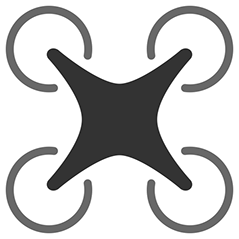

Christina Thiphavong
Resume
- Skills
- CAD: AutoCAD, Inventor
- Microsoft: Word, Excel, Powerpoint
- Adobe: Photoshop CS6
- Computer Languages: Python, C++, Java
- Experience
- HackMT
- 2016: I participated and programmed a tictactoe game, in python, which the user can play against the computer or another human player present.
- 2017: I volunteered to help run HackMT. My tasks included: answering any questions that the participants had about the Hackathon and mentoring any participants that needed help with Python.
- SkyHack
- 2017: I participated and developed a natural disaster plan with dispatching drones to provide power, communication, and resources to those that were stranded.
- Education
- Middle Tennessee State University
- 2014-Present
- Aerospace, Unmanned Aircraft Systems (UAS) Operations Concentration, B.S.

- Computer Science, B.S.
- Minor in Mathematics
- Participation and Awards
- Member of Association for Computing Machinery
- Member of Women in Computer Science at MTSU
- Member of Unmanned Aircraft System Club
- Member of Honor Society
- Member of Women in Aviation
- Recipient of the Hope Scholarship
- Recipient of the DREAM Scholarship